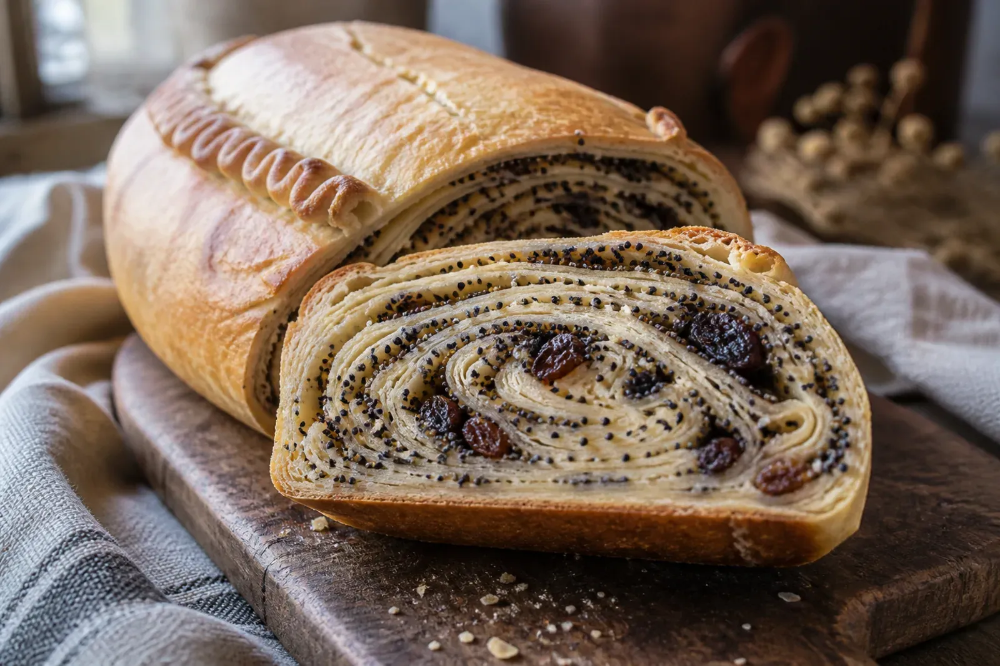

- Šimtalapis -

Description
Šimtalapis is a pastry from Lithuania that is prepared with yeast, dough, poppy seeds, sugar, and butter, assembled in a way that creates a multi-layered structure. Its name literally translates to “hundred leaves,” describing the appearance of the finished pastry with its many folded sheets of dough.
Ingredients
- 700g wheat flour
- 250ml milk
- 25g yeast
- 4 eggs
- 120g sugar (for the dough)
- 400g melted butter
- 250g ground poppy seeds
- 150g sugar (for the filling)
- 150g raisins
- Pinch of salt
Instructions
- Mix the yeast in warm milk with a spoonful of sugar and leave it to foam.
- Make the dough from flour, eggs, yeast+milk mix, sugar and salt. Knead the mix into an elastic dough and let it rest. Make sure it's elastic enough to make it into layers later on.
- Divide the dough, rolling each part into very thin layers and then stretching them carefully. If the dough ruptures, it needs more rest or it is not sufficiently elastic.
- Grease the layers with butter and sprinkle them with poppy seeds, sugar and raisins.
- Roll it all up, put it in a mold and bake in a 170°-180° oven until the inside is properly cooked.
- Wait for it to cool down and enjoy!